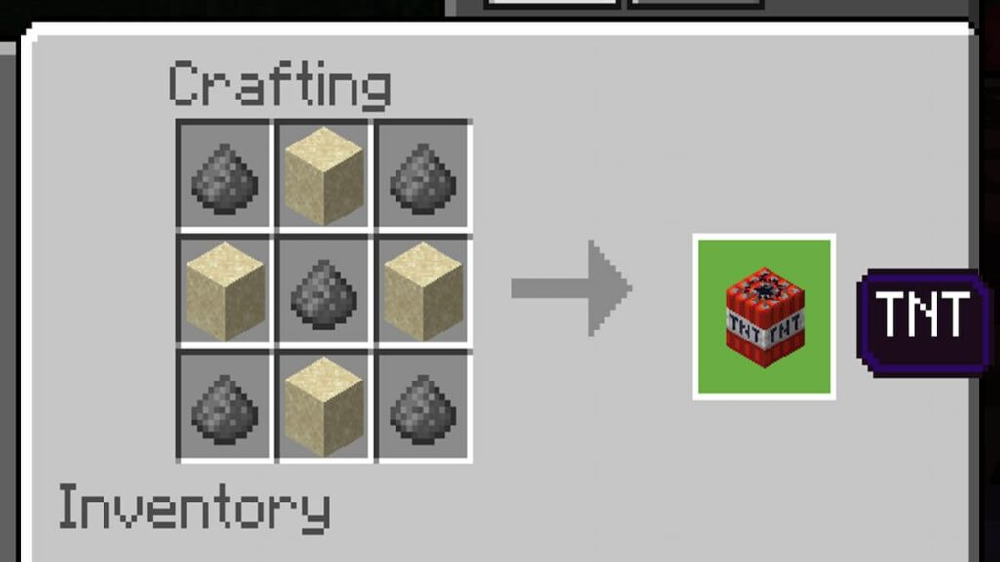

TNT is an explosive block that can be primed to generate an explosion. The TNT is mostly red with white in the middle. The words "TNT" is printed on the block.
The most common use of a TNT block is to cause destruction of buildings or land. Other uses of TNT could be used to mine more efficiently, however it requires a lot of resources to create.

Back to Recipes